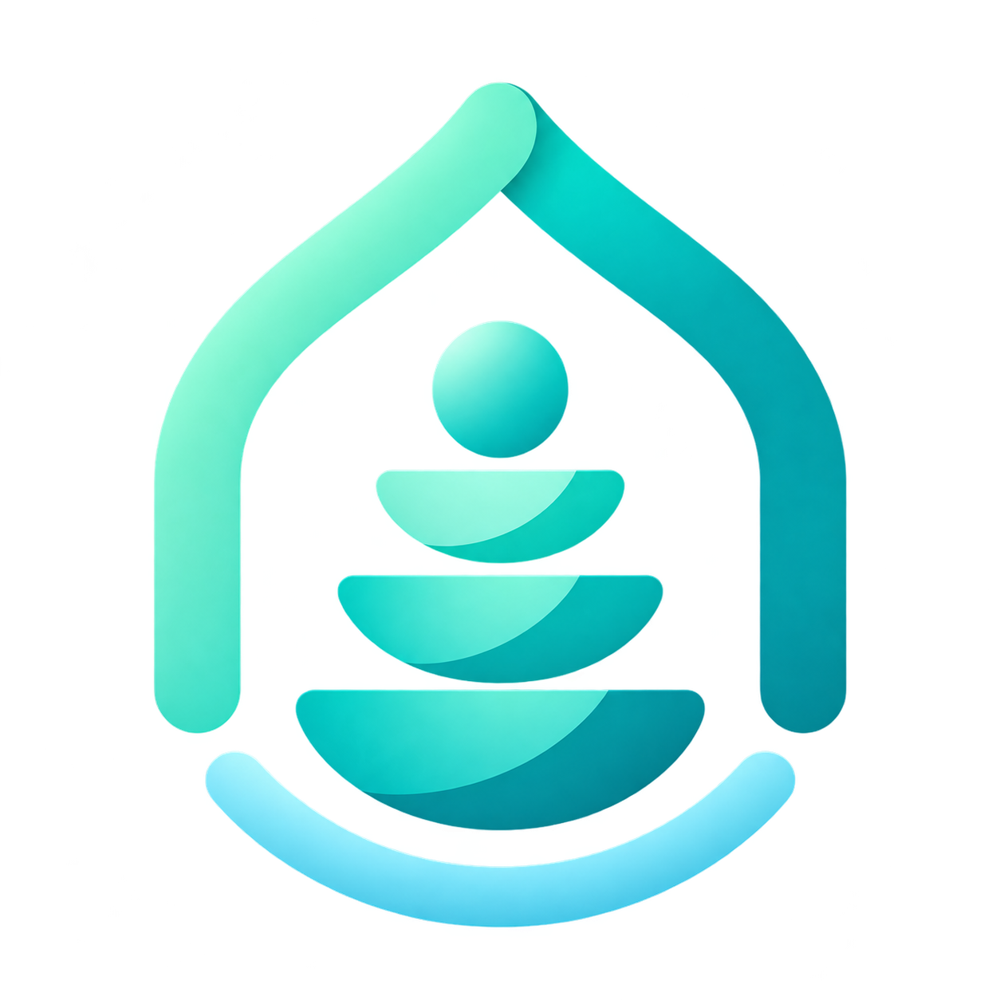
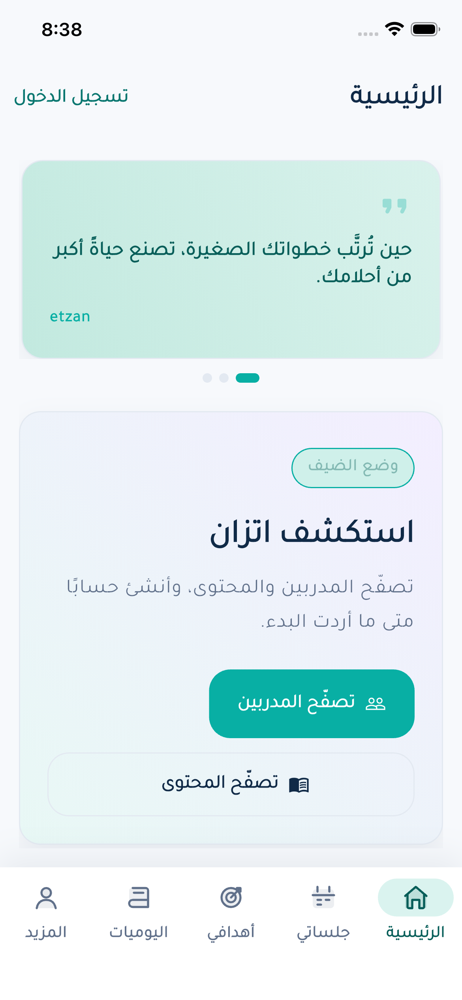

استكشف قبل التسجيل
تهيئة واضحة ووضع ضيف لتصفّح المدربين والمحتوى، مع توضيح الصفحات التي تحتاج حسابًا.

اتزانetzan GitHubFLUTTER · ARABIC-FIRST · LIFE COACHING
مساحة تجمع تطوير الذات، اكتشاف المدربين، والأهداف اليومية. من أول خطوة كضيف، إلى متابعة رحلتك في مكان واحد.

ابدأ بالاستكشاف.
بإيقاعك أنت.
التجربة، خطوة بخطوة
اتزان يربط بين الاستكشاف، الدعم، والتنظيم اليومي، بواجهة عربية تضع رحلتك في المقدمة.
تهيئة واضحة ووضع ضيف لتصفّح المدربين والمحتوى، مع توضيح الصفحات التي تحتاج حسابًا.
بحث حسب الاسم أو التخصص، ملف المدرب، ثم مسارات الحجز والجلسات والمحادثات.
أهداف وعادات وخطة يومية وتقويم. لوحة متابعة تجمع الصورة العامة بدل تشتيتها.
يوميات وتسجيل للمزاج، محتوى معرفي، وملف شخصي للإنجازات والتقدم الأسبوعي.
من داخل التطبيق
لقطات أصلية من التطبيق على iPhone، مع عرض كامل لكل شاشة. افتح أي صورة لتشوف التفاصيل بحجم أكبر.
الهوية من أول لحظة.
تمهيد بسيط لفكرة التطبيق.
بداية الحساب أو الدخول كضيف.
استكشاف قبل الالتزام بحساب.
التخصصات والملفات في مكان واحد.
إنجازاتك وصورة تقدمك الأسبوعي.
الأهداف والعادات والخطة اليومية.
جلسات ومؤشرات وإجراءات سريعة.
الصور توثّق الواجهة في وقت التقاطها، ولا تمثّل نتائج أو تقييمات مضمونة لأي مستخدم.
خلف الواجهة
ما يهم فريق التطوير: فصل المسؤوليات، قابلية إعادة الاستخدام، ومسارات بيانات واضحة.
FEATURE-FIRST ARCHITECTURE
الواجهة تتعامل مع نماذج التطبيق، وطبقة البيانات تتولى الربط بالخدمات.
Flutter Bloc / Cubit وGetIt في مسارات المصادقة ولوحة المتابعة والتنبيهات.
كود ربط مع Supabase للمصادقة والبيانات والتخزين والتحديثات الفورية. التشغيل يعتمد على إعداد الخدمة وصلاحياتها.
ألوان وخطوط ومسافات ومكوّنات مشتركة، مع واجهات تتكيف حسب عرض الشاشة.
Easy Localization، اتجاه RTL/LTR، وقوالب فاتحة وداكنة ضمن إعدادات التطبيق.
استكشف الشغل من الداخل
المصدر، هيكل المشروع، وتفاصيل تشغيل التطبيق متاحة في المستودع.